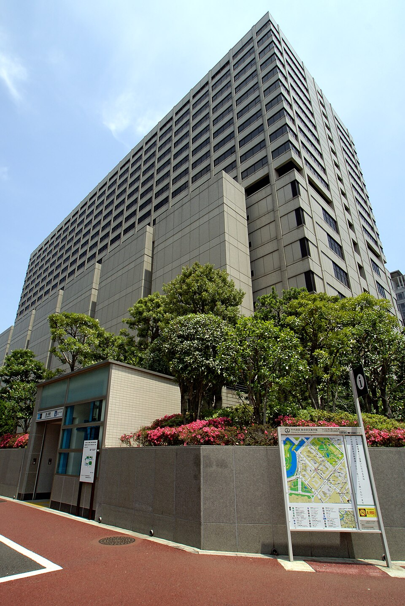
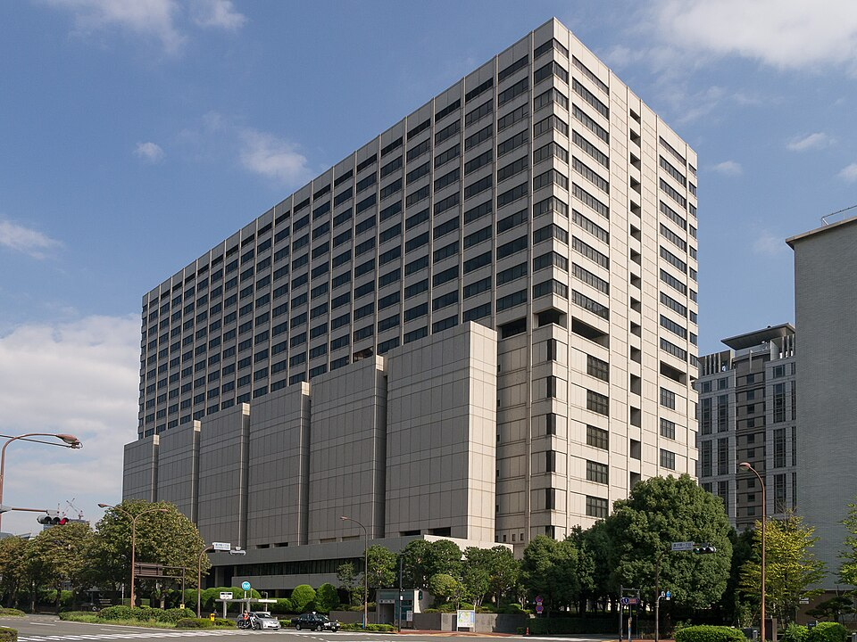
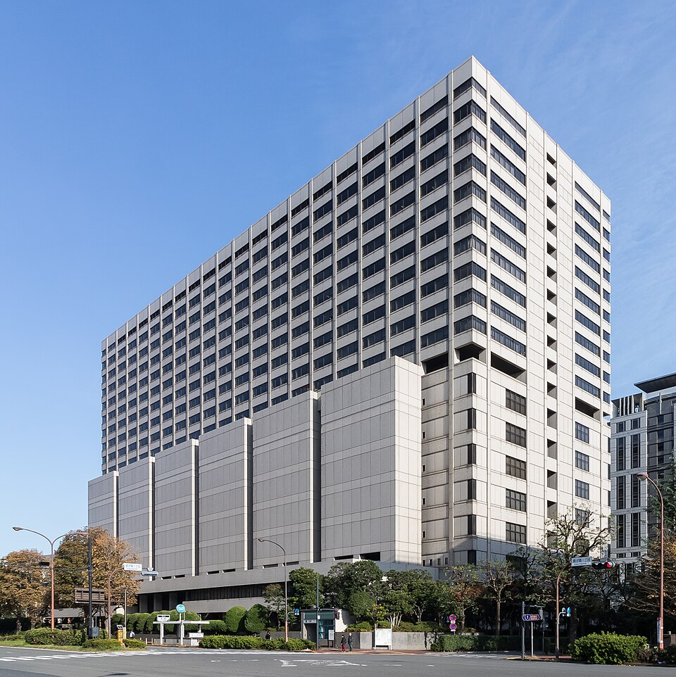

.jpg){kind=link}
菊
菊川剛
きくかわ・つよし
代表取締役社長
役割：損失隠しを指示・了解した最終的な責任者とされた
その後：懲役3年・執行猶予5年。民事賠償1
1980年代後半〜2020年
オリンパスは、バブル期の金融商品運用で生じた含み損を、海外ファンドなどに移す「飛ばし」で連結決算から外し。損失計上を長年先送りした。1
2000年代には国内3社の高値買収や、ジャイラス買収に伴うFA報酬・優先株買戻しを利用して、損失をファンドから回収し。差額を「のれん」として処理した。2
2011年、社長マイケル・ウッドフォードの疑惑追及と解任を契機に露見し、菊川剛、山田秀雄、森久志らに刑事有罪判決、会社に罰金7億円。旧経営陣3人に約594億円の民事賠償が確定した。1
刑事判決では、長期間にわたり少数の幹部に重要な経営情報が集中し、取締役会と監査役会が形骸化していた点が評価された。第三者委員会は、ワンマン体制、異論を述べにくい企業風土。監督機関の機能不全を原因として指摘した。事件後、オリンパスはコンプライアンスヘルプラインの拡充とCCOの設置を公表した。金融庁は、外部協力者が虚偽開示に加担した場合の課徴金制度の対象範囲にも課題があると説明した。134
平成25年7月3日、東京地方裁判所は、被告会社について、長期間にわたり、少数の幹部に重要な経営情報が集中し、経営を監視するはずの取締役会、監査役会等が形骸化していたことがあり、わが国の大規模な公開会社のガバナンスに重大な不信を抱かせた点は厳しく非難されるべきであるなどとして、被告会社に罰金7億円の判決を言い渡し、被告人A（当該会社代表取締役）については、遅くとも平成13年にオリンパスの代表取締役に就任した以降、損失隠しの金額や具体的方法について、被告人Bらから定期的に報告を受け、本件の発覚まで一貫して損失隠しを指示・了解し、最終的な責任者として本件犯行の意思決定を行ったもので、その刑事責任は重大であるなどとして、被告人Aに懲役3年（執行猶予5年）の判決を言い渡した。
意味：判決の要旨として、会社のガバナンス不全と代表取締役の最終責任を示す。
本件では、経営トップが財務担当者から定期的に報告を受けた一方、他の取締役や監査役には情報が伝わらなかった。監査法人が個別の会計処理を問題視しても、長期間の損失分離を全体として把握できなかった。ウッドフォードの疑惑指摘後には、疑惑の内容を調査するより先に解職が決議された。取締役会の議論と監査役の監督が実効的であれば、損失分離の継続期間を短縮できた可能性がある。制度面では、内部通報、監査法人の品質管理。取引所による内部管理体制の確認が再発防止策として整理された。256
本件の経緯は、会計数値の訂正だけではなく、誰が何を知り、誰に報告し。どの機関が検証したかを確認する。会社の刑事責任、役員の刑事責任、旧取締役の民事責任は。それぞれ異なる手続で判断された。株主、従業員、取引先、監査法人。取引所は異なる損害と監督上の課題を負った。したがって、事件の評価では、損失額だけでなく。情報の集中と意思決定の記録を対象にする。17
オリンパスは1980年代から金融資産の運用を積極化させた。バブル崩壊後の株価下落や金融商品の損失によって含み損を抱え、1998年ごろには約950億円程度に膨らんだ。時価会計の適用が進めば評価損として計上する必要があったため、経営陣は損失を一挙に表面化させない方法を検討した。財務担当者の山田秀雄、森久志は、アクシーズ・ジャパン証券の中川昭夫、アクシーズ・アメリカの佐川肇らに相談し。連結決算対象外となるファンドを使って含み損を抱えた金融商品を移す仕組みを検討した。8
本委員会の調査開始後の2011年11月8日、オリンパスは「過去の損失計上先送りに関するお知らせ」と題して、本委員会による調査に対する協力の過程において、1990年代ころから有価証券投資等にかかる損失計上の先送りを行っていたこと、ジャイラスの買収に際しFAに支払った報酬や優先株の買戻しの資金並びに本件国内3社の買収資金が、複数のファンドを通す等の方法により、損失計上先送りによる投資有価証券等の含み損を解消するためなどに利用されていたことが判明したと発表した。
意味：会社自身の公表内容として、買収資金と損失処理の資金が連動していたことを示す核心部分である。
第三者委員会が認定した基本構造は、オリンパスが銀行に預金や国債を預け、その預金や国債を担保に簿外の融資を受け。融資資金でファンドを組成するものであった。ファンドは含み損を抱えた金融商品をオリンパスから簿価で買い取り、連結対象外とされた。これにより損失はファンド側に移されたが、オリンパスが資金を拠出した事実や実質的な出資者であったことは外部から見えにくくなった。ヨーロッパ・ルートでは政府短期証券やLGT銀行預金が使われ、シンガポール・ルートではコメルツ銀行、ソシエテ・ジェネラル、SG Bond、Easterside、21C。CFCなどが経由された。82
オリンパスが①外国銀行への預金、国債等の預入れ、ファンドへの投資を実行し、②これらの預金や国債を担保に簿外で外国銀行にローンを組み、③これら資金でファンドを作るかあるいは債券を購入するかし、④この購入した債券を作ったファンドに貸したこととし、そのファンドによってこれを市場で売却して代金を得る、以上の過程によって、簿外で、含み損を抱えた金融商品等をファンドに購入させる資金を捻出する。ファンドは、（1）によって捻出した資金により、オリンパスが保有する含み損を抱えた金融商品等を簿価で購入する。これにより損失がファンドに移転するが、ファンドは連結対象外としていたため、オリンパスの含み損は消える。
意味：損失分離の資金調達、簿価売却、連結除外という仕組みを報告書が具体的に説明している。
2000年には損失処理の資金を提供するスキームとしてG.C. New Vision Venturesが設立された。出資資金は実質的にオリンパスが負担し、時期によって約300億円を受け皿ファンドに提供した。2003年から2005年にかけてGCNVVはアルティス、ヒューマラボ、NEWS CHEFを取得した。これらの株式はNeoやITVから安価に取得された一方、2006年にGCNVVなどが買い取った価格は高額であった。オリンパスは事業計画をもとに3社の株式を買い取り、ファンド側は売却益を得て、その資金を損失分離スキームに関係する他のファンドへ還流させた。2007年の会計基準変更で連結対象となる可能性が高まると、オリンパスはGCNVVを満期前に解約し、国内3社株式や貸付金などを引き継いだ。82
ファンドに移転した損失の補填については、ファンドが何らかの株式を取得してこれをオリンパスに高額で売却するか、あるいは海外企業の買収においてオリンパスが支払ったFAへの報酬（配当優先株やワラントの取得対価）が損失移転先のファンドに還流するよう仕組むかすることで、ファンドが抱えた損失を解消する。オリンパスは、これら還流された資金によりローンや貸借取引を清算し、当初設定した預金やファンドを解約し、その償還を受ける。オリンパスがファンドの損失補填のために支出した株式取得対価やFA報酬等は、オリンパスの連結貸借対照表上のれんに計上され、10～20年間をかけて順次償却する。
意味：国内3社買収やジャイラス関連報酬が、損失処理の出口として利用された会計構造を示す。
2006年、オリンパスは英国の医療機器メーカーGyrus Group PLCの買収を進め、アクシーズ・アメリカとの間でFA契約を締結した。FA報酬の一部としてジャイラス株式のオプションやワラント購入権が付与され、これらはAXAM Investmentsへ譲渡された。買収額は約2,063億円であり、あずさ監査法人はFA報酬のうち買収額の5％を超える部分について対価性が乏しいと指摘した。2009年3月期には155億円が前期損益修正損として計上された。2008年にはジャイラスがAXAMに配当優先株を発行し、2010年3月にオリンパス側はこれを620百万ドルで買い戻した。簿価165億円との差額414億円のうち412億円はのれんとして計上された。82
ファンドに移転した損失の補填については、ファンドが何らかの株式を取得してこれをオリンパスに高額で売却するか、あるいは海外企業の買収においてオリンパスが支払ったFAへの報酬（配当優先株やワラントの取得対価）が損失移転先のファンドに還流するよう仕組むかすることで、ファンドが抱えた損失を解消する。オリンパスは、これら還流された資金によりローンや貸借取引を清算し、当初設定した預金やファンドを解約し、その償還を受ける。オリンパスがファンドの損失補填のために支出した株式取得対価やFA報酬等は、オリンパスの連結貸借対照表上のれんに計上され、10～20年間をかけて順次償却する。
意味：国内3社買収やジャイラス関連報酬が、損失処理の出口として利用された会計構造を示す。
マイケル・ウッドフォードは2011年4月に社長執行役員となり、同年6月に代表取締役社長執行役員・COOとなった。2011年7月末にFACTAの記事を入手し、ジャイラス買収のFA報酬や国内3社の取得価格について疑問を持った。9月から菊川剛、森久志らに買収案件の資金、価格、助言報酬の説明を求めたが、菊川、森、中塚誠。山田秀雄は問題を取締役会で正面から議論しなかった。2011年10月14日、取締役会はウッドフォードを代表取締役・社長執行役員から解職した。会社は当初、経営の方向性・手法に大きな乖離が生じたためと説明した。解職後もウッドフォードは疑惑を外部に説明し、2011年11月8日にオリンパスは損失計上先送りを公表した。89
山田は、菊川、森及び中塚とともに2011年9月以降のウッドフォードによる疑惑指摘に対しても、取締役会で取り上げて議論しようとせず、損失先送りについて認識がない取締役に対し、損失先送りの事実を隠蔽し、ジャイラスや本件国内3社のM&Aに関しては違法と言われるような問題は何もないとの虚偽の説明を続け、さらには、他の監査役に対してウッドフォードのことを非難して解職に賛成する方向に導くなどし、損失先送りについて認識がない監査役が疑問を持たないように仕向けて、違法行為の発覚を避けようとした。
意味：疑惑を調査する代わりに、社内説明を統一し、告発者を排除する方向へ動いたとする認定である。
第三者委員会は2011年12月6日に報告書を提出し、損失分離と損失解消の仕組み、経営陣の関与。取締役会・監査役会・監査法人の機能不全を分析した。2012年3月に証券取引等監視委員会が告発し、4月には投資有価証券やのれんの過大計上による虚偽記載を認定して課徴金納付命令を勧告した。2013年7月3日、東京地方裁判所は会社に罰金7億円、菊川剛と山田秀雄に懲役3年・執行猶予5年。森久志に懲役2年6月・執行猶予4年を言い渡した。2019年5月、東京高等裁判所は旧取締役5人の義務違反を認定し、2020年10月に菊川、山田。森の約594億円の賠償が確定した。会社は2012年7月に課徴金1億9,181万9,994円を納付した。東京証券取引所は2012年1月20日に特設注意市場銘柄へ指定したが、上場を維持し、2013年6月10日に指定を解除した。オリンパスは2012年5月29日にウッドフォードとの英国労働審判をめぐる和解に合意し、1,000万ポンドを支払った。これらの処分は、開示違反、経営陣の個人責任。監査と取引所の監督という複数の論点を含む。1710111213
平成25年7月3日、東京地方裁判所は、被告会社について、長期間にわたり、少数の幹部に重要な経営情報が集中し、経営を監視するはずの取締役会、監査役会等が形骸化していたことがあり、わが国の大規模な公開会社のガバナンスに重大な不信を抱かせた点は厳しく非難されるべきであるなどとして、被告会社に罰金7億円の判決を言い渡し、被告人A（当該会社代表取締役）については、遅くとも平成13年にオリンパスの代表取締役に就任した以降、損失隠しの金額や具体的方法について、被告人Bらから定期的に報告を受け、本件の発覚まで一貫して損失隠しを指示・了解し、最終的な責任者として本件犯行の意思決定を行ったもので、その刑事責任は重大であるなどとして、被告人Aに懲役3年（執行猶予5年）の判決を言い渡した。
意味：判決の要旨として、会社のガバナンス不全と代表取締役の最終責任を示す。






| オリンパス本社（当時） | 東京都新宿区西新宿2-3-1 | 事件発覚時の本社・取締役会の中心 | 19 |
| 東京地方裁判所 | 東京都千代田区霞が関1-1-4 | 刑事・民事裁判の第一審 | 20 |
| 東京高等裁判所 | 東京都千代田区霞が関1-1-4 | 旧取締役民事賠償の控訴審 | 21 |
| 最高裁判所 | 東京都千代田区隼町4-2 | 民事賠償確定の上告審 | 22 |
| 東京証券取引所 | 東京都中央区日本橋兜町2-1 | 特設注意市場銘柄指定・上場維持の舞台 | 23 |
| 金融庁・証券取引等監視委員会 | 東京都千代田区霞が関3-2-1 | 課徴金勧告・刑事告発 | 24 |
| LGT Bank Liechtenstein | Vaduz, Liechtenstein | 国債担保融資・ヨーロッパルート | 8 |
| AXES America | 米国デラウェア州 | ジャイラスFA契約・ワラント関連法人 | 2 |
| AXAM Investments | ケイマン諸島 | 優先株・ワラントの受け皿法人 | 2 |
| SG Bond関連拠点 | ケイマン諸島 | シンガポール・ルートのファンド | 8 |
| Commerzbank Singapore | シンガポール | シンガポール・ルートの資金調達 | 8 |
| Gyrus Group | 英国・ケンブリッジ周辺 | オリンパスが買収した英国医療機器会社 | 8 |
損失分離は、連結対象外のファンドに含み損金融商品を移し、国内3社の買収やジャイラス関連の支出を通じてファンドの損失を解消する仕組みだった。8
きくかわ・つよし
代表取締役社長
役割：損失隠しを指示・了解した最終的な責任者とされた
その後：懲役3年・執行猶予5年。民事賠償1
まいける・うっどふぉーど
代表取締役社長
役割：買収案件を調査し疑惑を追及
その後：取締役辞任。会社と和解2
やまだ・ひでお
財務担当・監査役
役割：財務部門で損失分離を維持
その後：懲役3年・執行猶予5年。民事賠償1
もり・ひさし
財務担当・取締役
役割：財務部門でファンドを運用
その後：懲役2年6月・執行猶予4年。民事賠償1
取締役・監査役
役割：損失先送りの説明を受けた役員
その後：刑事処分の詳細は本調査で未確認2
社長
役割：損失分離を指示した歴代トップ
その後：民事請求の対象8
会長
役割：歴代経営トップ
その後：民事請求の対象2
アクシーズ・ジャパン証券
役割：損失分離スキームの相談相手
その後：外部協力者8
AXES・アクシーズ・アメリカ
役割：ファンドとジャイラス買収に関与
その後：外部協力者2
ファンド関連会社
役割：GCNVV関連資産の引継ぎで報酬を受領
その後：外部協力者2
第三者委員会委員長
役割：調査報告書を取りまとめ
その後：第三者委員会の調査を終結8
監査法人
役割：1999年に「飛ばし」を追及
その後：監査のあり方が問われた8
行政機関
役割：課徴金勧告と刑事告発
その後：開示監督を実施17
行政機関
役割：課徴金納付命令を決定
その後：監査・開示制度を検討11
取引所
役割：特設注意市場銘柄に指定
その後：2013年6月に指定解除12
英国医療機器会社
役割：買収案件の対象
その後：オリンパス傘下8
相関図は、損失分離の実務を担った財務部門、外部協力者、疑惑を追及した社長。調査・監督機関を分けて示す。線の種類は、協力、対立、告発、金銭。上下関係を表す。
盟友・上司と部下。両人はオリンパスの財務・金融資産運用部門で長く行動を共にし、含み損の処理、受け皿ファンド、国内3社。ジャイラス優先株買戻しを共同で進めた。報告書は両人を損失分離・損失解消スキームの中心人物として扱う。第三者委員会報告書8
資金の出し手と受け手・盟友。山田は金融資産運用を通じて中川と知り合い、連結対象外ファンドへの損失移転を相談した。中川はアクシーズ証券を設立し、佐川とともにファンド構築に関与した。第三者委員会報告書8
資金の出し手と受け手。山田・森は中川を介して佐川と関係を深め、佐川がAXESやAXAMを設立した。ジャイラスFA報酬・優先株の受け皿としてAXAMが使われた。監査役等責任調査委員会報告書2
盟友・資金の出し手と受け手。横尾は証券会社時代にオリンパスとの取引を通じて山田と親交を持ち、LGT銀行幹部を紹介した。後にGC、GCI、GCI Caymanを設立し。ファンド運営に関与した。監査役等責任調査委員会報告書2
資金の出し手と受け手。森は横尾とともにLGT銀行へ赴き、ファンドへの担保融資の必要性を説明した。横尾の紹介が、ヨーロッパ・ルート構築の基盤となった。第三者委員会報告書8
上司と部下・庇護・口利き。菊川は財務担当常務就任後、山田から運用損と処理実態の説明を受け、遅くとも1999年には飛ばしを認識したと認定された。第三者委員会報告書8
上司と部下。森は経営企画・財務を担当し、損失解消策を菊川へ報告した。菊川はジャイラス優先株について「全部消せるか」と尋ねたと報告書に記載される。第三者委員会報告書8
上司と部下。中塚は財務部長・財務戦略部長を経て取締役となり、外部協力者との実務折衝に関与した。損失先送りを認識した取締役として責任調査の対象となった。取締役責任調査委員会報告書5
対立・確執。ウッドフォードが買収価格・FA報酬を問題視すると、菊川らは取締役会で問題を正面から扱わず、2011年10月14日にウッドフォードを社長から解職した。取締役責任調査委員会報告書5
対立・確執。ウッドフォードは森に資料提出と説明を求めた。責任調査委員会は、森らが疑惑を知らない取締役に対し、問題はないとの説明を続けたと認定した。取締役責任調査委員会報告書5
裏切り・告発。山田は2011年6月に取締役から監査役へ移った後も、ウッドフォードの疑惑指摘に対して損失先送りを公表せず、2011年11月8日の公表後に辞任意向を表明した。取締役責任調査委員会報告書14
上司と部下。山田は1990年代、運用損の処理を岸本に相談し、岸本は市場回復を待つ趣旨の対応をしたと報告書に記載される。第三者委員会報告書8
上司と部下。菊川が財務担当常務となる際、山田は岸本に「巨額損失を菊川にいつ話すのか」と尋ねた。岸本は自らタイミングを見て話すと答えたとされる。第三者委員会報告書8
盟友。両人はアクシーズ証券・AXESに共同関与し、オリンパスの含み損を受け皿ファンドへ移すスキームを支援した。監査役等責任調査委員会報告書2
資金の出し手と受け手。佐川側のファンドとLGT銀行関係者が接続し、Gurdon Overseasなどが資金調達・ファンド運営に関与したと報告書に記載される。監査役等責任調査委員会報告書2
庇護・口利き。横尾は山田・森にLGT銀行幹部を紹介し、オリンパスの国債を担保とした融資スキームの構築を助けた。第三者委員会報告書8
対立・確執。第三者委員会は、少数の幹部に重要情報が集中し、取締役会・監査役会が十分に機能しなかったと評価した。SESC年次資料1
対立・監督不全。あずさ監査法人はFA報酬の5％超部分について対価性が乏しいと指摘し、155億円の損失計上につながった。一方、長期的な損失分離全体は発見できなかった。第三者委員会報告書8
監督・会計処理の承認。新日本監査法人は、ジャイラス優先株を負債から資本へ振り替える会計処理を了承したと報告書に記載される。第三者委員会報告書8
対立・紛争。ウッドフォードは解職を違法な解雇と主張し、英国労働審判を申し立てた。オリンパスは1,000万ポンドで和解した。EDINET臨時報告書13
山田は、菊川、森及び中塚とともに2011年9月以降のウッドフォードによる疑惑指摘に対しても、取締役会で取り上げて議論しようとせず、損失先送りについて認識がない取締役に対し、損失先送りの事実を隠蔽し、ジャイラスや本件国内3社のM&Aに関しては違法と言われるような問題は何もないとの虚偽の説明を続け、さらには、他の監査役に対してウッドフォードのことを非難して解職に賛成する方向に導くなどし、損失先送りについて認識がない監査役が疑問を持たないように仕向けて、違法行為の発覚を避けようとした。
意味：疑惑を調査する代わりに、社内説明を統一し、告発者を排除する方向へ動いたとする認定である。
公的資料で確認できる中心は、ファンド、証券会社。FA契約を含む外部協力者との関係である。暴力団との直接関係は、第三者委員会、SESC。刑事判決の確認範囲では公的認定を確認できない。
中川昭夫、佐川肇、アクシーズ証券、AXES、CFC 認定
横尾宣政。LGT Bank in Liechtenstein 認定
GCNVV、GPAI、Creative Dragon、Dynamic Dragon II、Global Target 認定
コメルツ銀行、ソシエテ・ジェネラル、SG Bond、Easterside 認定
横尾宣政。その他野村系証券人脈 認定
AXES、AXAM、佐川肇 認定
暴力団・指定暴力団 確認できない
総会屋、仕手筋 確認できない
政治家、政党 確認できない
旧ジェイ・ブリッジ関係者等 報道
山田は、菊川、森及び中塚とともに2011年9月以降のウッドフォードによる疑惑指摘に対しても、取締役会で取り上げて議論しようとせず、損失先送りについて認識がない取締役に対し、損失先送りの事実を隠蔽し、ジャイラスや本件国内3社のM&Aに関しては違法と言われるような問題は何もないとの虚偽の説明を続け、さらには、他の監査役に対してウッドフォードのことを非難して解職に賛成する方向に導くなどし、損失先送りについて認識がない監査役が疑問を持たないように仕向けて、違法行為の発覚を避けようとした。
意味：疑惑を調査する代わりに、社内説明を統一し、告発者を排除する方向へ動いたとする認定である。
| 東京地裁 | 2013-07-03 | 罰金7億円 |
金融商品取引法違反・虚偽有価証券報告書提出。確定1
| 東京地裁 | 2013-07-03 | 懲役3年・執行猶予5年 |
金融商品取引法違反。確定1
| 東京地裁 | 2013-07-03 | 懲役3年・執行猶予5年 |
金融商品取引法違反。確定1
| 東京地裁 | 2013-07-03 | 懲役2年6月・執行猶予4年 |
金融商品取引法違反。確定1
| 金融庁 | 2012-07-11 | 課徴金1億9,181万9,994円 |
虚偽記載。確定11
| 東京高裁 | 2019-05 | 最大59,405,828,936円の連帯支払 |
| 最高裁 | 2020-10 | 約594億円の賠償確定 |
本委員会の調査開始後の2011年11月8日、オリンパスは「過去の損失計上先送りに関するお知らせ」と題して、本委員会による調査に対する協力の過程において、1990年代ころから有価証券投資等にかかる損失計上の先送りを行っていたこと、ジャイラスの買収に際しFAに支払った報酬や優先株の買戻しの資金並びに本件国内3社の買収資金が、複数のファンドを通す等の方法により、損失計上先送りによる投資有価証券等の含み損を解消するためなどに利用されていたことが判明したと発表した。
意味：会社自身の公表内容として、買収資金と損失処理の資金が連動していたことを示す核心部分である。
1998年3月頃から、オリンパスは連結対象とならないファンドに対し、約1350億円もの実質的な資金を提供して含み損を抱える金融商品をオリンパスから帳簿価額で売却し、含み損を表面化せずに簿外に移管して分離するスキーム（以下、「損失分離スキーム」という）を策定し、実行するに至った。このような含み損を抱えた金融商品のオリンパスからの分離については、財務部門に所属するごく限られた従業員によって実行されるとともに、それらの限られた従業員や財務部門を担当する取締役（以下、「関与取締役」という）らによってその後も維持され、当該損失分離の事実及び含み損の状況については、歴代の経営トップ等、一部の役員に対しては定期的に報告されたものの、他の取締役や監査役には報告されなかった。
意味：不正が全社的に開示されたのではなく、限定された人脈と情報遮断によって長期維持されたとする認定である。
菊川は財務担当常務への就任直後の1999年9月期末に特別損失の計上を経験したが、遅くともその年内には、岸本からの指示、伝達及び山田からの報告によって、オリンパスが未公表の含み損を抱え、その先送りのためにいわゆる「飛ばし」をしていたこと、及び損失分離・解消スキームについても了知した。2000年1月28日開催の経営会議の数日前には、資金の使用目的別区分と金融資産基本ポートフォリオが提案されたが、これは、損失分離・解消スキームを達成するために必要な巨額の資金を手当てするため、金融資産や事業投資ファンドへの投資を行うためのものであった。菊川は、これについても、起案者である森から事前に十分な説明を受け、了承していた。
意味：菊川氏について、社長就任前から損失隠しの存在と実行方針を把握していたとの認定である。
オリンパスが2008年3月に本件国内3社の株式をNeo、OFH及びITVから買い取ったとき、山田は、本件国内3社の事業価値をかなり高めに評価したことを菊川に報告したところ、菊川は、「これで行こうよ。」「3社を何とかしていかないとな。自分も協力するから。」「うまく行けば大分減るよ。」と発言して懸案事項の解決に自らも積極的に取り組む姿勢を示した。ジャイラス買収についても、山田及び森は、事態の進展に応じて逐一、社長の菊川に報告していた。2008年9月ころ、ジャイラスの配当優先株を発行したAxesから、これをいかに高額で買い取ることができるかを検討したときに、菊川は、山田及び森に、「どうだ、全部消せるか。」と尋ね、会話の最後に、「これで終わるといいな。」とその心情を吐露した。
意味：買収が通常の事業判断ではなく、過去の損失を「消す」目的で進められたことを示す発言である。
オリンパスが①外国銀行への預金、国債等の預入れ、ファンドへの投資を実行し、②これらの預金や国債を担保に簿外で外国銀行にローンを組み、③これら資金でファンドを作るかあるいは債券を購入するかし、④この購入した債券を作ったファンドに貸したこととし、そのファンドによってこれを市場で売却して代金を得る、以上の過程によって、簿外で、含み損を抱えた金融商品等をファンドに購入させる資金を捻出する。ファンドは、（1）によって捻出した資金により、オリンパスが保有する含み損を抱えた金融商品等を簿価で購入する。これにより損失がファンドに移転するが、ファンドは連結対象外としていたため、オリンパスの含み損は消える。
意味：損失分離の資金調達、簿価売却、連結除外という仕組みを報告書が具体的に説明している。
ファンドに移転した損失の補填については、ファンドが何らかの株式を取得してこれをオリンパスに高額で売却するか、あるいは海外企業の買収においてオリンパスが支払ったFAへの報酬（配当優先株やワラントの取得対価）が損失移転先のファンドに還流するよう仕組むかすることで、ファンドが抱えた損失を解消する。オリンパスは、これら還流された資金によりローンや貸借取引を清算し、当初設定した預金やファンドを解約し、その償還を受ける。オリンパスがファンドの損失補填のために支出した株式取得対価やFA報酬等は、オリンパスの連結貸借対照表上のれんに計上され、10～20年間をかけて順次償却する。
意味：国内3社買収やジャイラス関連報酬が、損失処理の出口として利用された会計構造を示す。
あずさ監査法人は、1999年9月30日朝、オリンパスにおいて「飛ばし」が行われているとの情報に接した。その情報によれば山田及び森が関与しているとされ、関与金融機関名、金額なども明らかにされていて、確度の高いものと思われた。そこで、あずさ監査法人がオリンパスに赴いたところ、山田、森及び中塚の3名が対応した。山田らは当初否定していたが、執拗な質問の結果、「飛ばし」の事実を認めるに至った。それによると、外資系証券の関係者が関与するファンドに対し、特定金外信託の中の含み損を抱えた金融商品を当該信託の簿価で売却し、その代金を得たというものであった。そこで、あずさ監査法人は、オリンパスに対し、このような「飛ばし」は不正な取引であるから、直ちにこれを取り消し、オリンパスが取得した売買代金額と当該金融商品をファンドに戻すよう要請した。
意味：監査法人の追及に対して当初否定し、最終的に認めた最初期の「飛ばし」発覚場面である。
これは、本件損失分離スキームに基づいて、受け皿ファンドに譲渡された金融商品については、数百億円レベルの含み損が発生したと認められることと整合しない。特定金外信託に含まれていた金融商品が時価で売却されていたとすれば、ファンドに数百億円レベルの含み損が移転するはずがない。そうすると、この金融商品を売却した際の「時価」が、実態と乖離したものだったのではないかという可能性が浮上する。運用先からオリンパスが入手した「時価」情報が、実は時価ではなく、時価に架空の価額を上乗せして簿価に近似させた価額だったのではないかという疑いが生ずる。
意味：帳簿上の価格情報そのものが実態を歪めていた可能性を、報告書が指摘している。
山田は、菊川、森及び中塚とともに2011年9月以降のウッドフォードによる疑惑指摘に対しても、取締役会で取り上げて議論しようとせず、損失先送りについて認識がない取締役に対し、損失先送りの事実を隠蔽し、ジャイラスや本件国内3社のM&Aに関しては違法と言われるような問題は何もないとの虚偽の説明を続け、さらには、他の監査役に対してウッドフォードのことを非難して解職に賛成する方向に導くなどし、損失先送りについて認識がない監査役が疑問を持たないように仕向けて、違法行為の発覚を避けようとした。
意味：疑惑を調査する代わりに、社内説明を統一し、告発者を排除する方向へ動いたとする認定である。
「ジャイラス買収に関するPwCの報告書に明らかなとおり、非常に多くの悲惨な誤り、そして並はずれてお粗末な判断力、これが重なって、国内3社の買収は13億米ドルというショッキングな額にのぼる株主への損失となりました。これは、ロンドンの悪徳トレーダーによって多大な損失が生じた近年のUBSスキャンダルと似通っています。私の見解では、ジャイラスをはじめ、実質的に価値のない企業を買収したという問題は、オリンパスの下級職員ではなく、最上級管理職員によって取引が行われたことから、さらに悪い事態だと言えます。」「現状に至ってはもはや擁護できない事態であることが明白であり、これから前向きに進む上での対策として、あなた方両者（菊川・森）が役員会を辞任することが必要です。」
意味：ウッドフォード氏が菊川・森氏に送った書簡の引用で、経営トップへの直接の責任追及を示す。
10月14日、臨時取締役会が開かれ、監査役4名（山田、今井、島田、中村）全員が出席した。取締役会の招集通知に記載された議題は、「過去のオリンパスの買収案件について」であったが、当日、議長の菊川から、「当社とウッドフォードとの契約（SERVICE AGREEMENT）解除の件」、「ウッドフォードについて代表取締役及び社長執行役員・CEO解職の件」などの議案が上程され、出席した取締役及び監査役からは何の発言も異議もなく、特別利害関係者であるウッドフォードを除く出席者全員の賛成で可決され、所要時間は5分足らずであった。
意味：疑惑の中身を実質審議せず、追及者の解職を短時間で決めた取締役会の状況を示す。
犯則嫌疑者は、オリンパス株式会社の代表取締役であったA、常勤監査役であったB、取締役であったC、会社役員であるD、E及びFと共謀の上、オリンパスの業務及び財産に関し、第1オリンパスの平成18年4月1日から平成19年3月31日までの連結会計年度につき、オリンパスの連結会計年度における連結純資産額が2322億4900万円であったにもかかわらず、損失を抱えた金融商品を簿外処理するなどの方法により、「純資産合計」欄に3448億7100万円と記載するなどした連結貸借対照表を掲載した有価証券報告書を提出し、第2オリンパスの平成19年4月1日から平成20年3月31日までの連結会計年度につき、連結純資産額が2514億5000万円であったにもかかわらず、損失を抱えた金融商品を簿外処理するとともに架空ののれん代を計上するなどの方法により、「純資産合計」欄に3678億7600万円と記載するなどした連結貸借対照表を掲載した有価証券報告書を提出し、もって、それぞれ、重要な事項につき虚偽の記載のある有価証券報告書を提出したものである。
意味：当局が虚偽記載の具体的な金額と、簿外処理・架空のれん計上を告発事実として特定している。
平成25年7月3日、東京地方裁判所は、被告会社について、長期間にわたり、少数の幹部に重要な経営情報が集中し、経営を監視するはずの取締役会、監査役会等が形骸化していたことがあり、わが国の大規模な公開会社のガバナンスに重大な不信を抱かせた点は厳しく非難されるべきであるなどとして、被告会社に罰金7億円の判決を言い渡し、被告人A（当該会社代表取締役）については、遅くとも平成13年にオリンパスの代表取締役に就任した以降、損失隠しの金額や具体的方法について、被告人Bらから定期的に報告を受け、本件の発覚まで一貫して損失隠しを指示・了解し、最終的な責任者として本件犯行の意思決定を行ったもので、その刑事責任は重大であるなどとして、被告人Aに懲役3年（執行猶予5年）の判決を言い渡した。
意味：判決の要旨として、会社のガバナンス不全と代表取締役の最終責任を示す。
オリンパス：経営の方向性・手法に大きな乖離が生じたため解職した。9
ウッドフォード：買収案件とFA報酬の説明を求めた後の解職であり、疑惑追及への対応だった。2
旧経営陣：買収は事業計画に基づく経営判断だった。8
第三者委員会：買収資金とファンドの損失解消が連動していたとした。8
あずさ監査法人：1999年に飛ばしの事実を追及し、取引の取消しを要請した。8
金融庁：監査法人の業務管理体制に問題があり改善命令が出されたと説明した。6